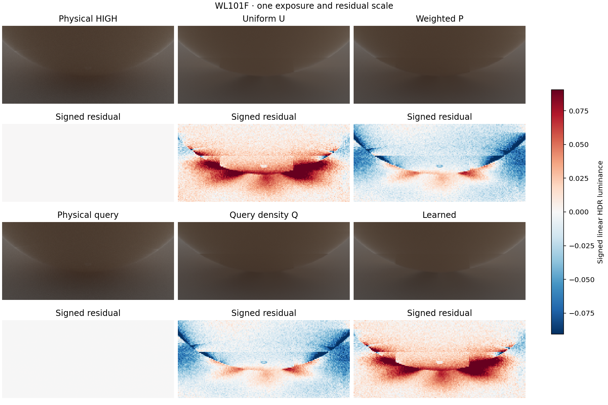
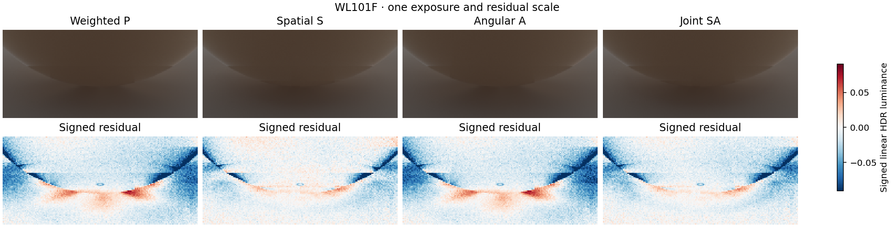
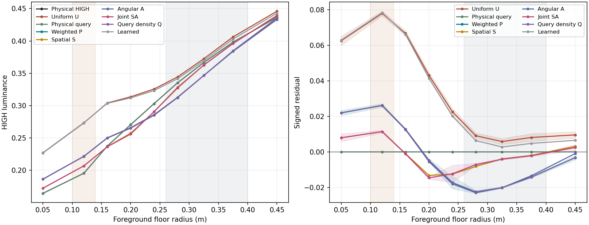
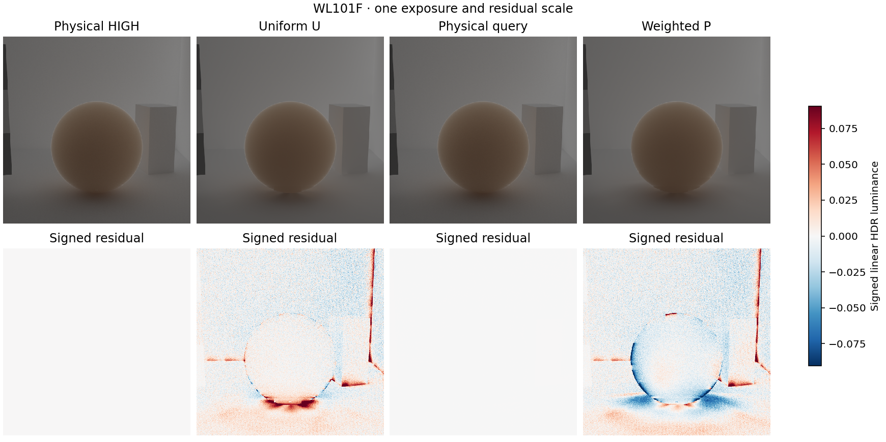

The original layout recovers most near-floor bias with a camera-query projection. Spatial subdivision recovers most of the remaining bias. The tested directional subdivision has a small effect. Spatial subdivision places both frozen endpoints inside their material bands. The diagnostic projections use this camera, scene and target regions.
Region and uncertainty metrics · Run configuration and hashes · Raw and review evidence index · Worklog
| Physical HIGH table | Near-floor excess | Near-minus-flank excess | Near relative RGB RMSE |
|---|---|---|---|
| Uniform U | +0.07015 | +0.06260 | 32.33% |
| Camera-weighted P, original layout | +0.01820 | +0.03637 | 9.99% |
| Spatial S | +0.00410 | +0.00818 | 4.96% |
| Angular A | +0.01801 | +0.03599 | 9.95% |
| Spatial and angular SA | +0.00401 | +0.00800 | 4.93% |
Signed linear HDR luminance relative to matched physical HIGH. Four independent field estimates were evaluated on the two original 4,096-spp camera streams. The exact query-level suffix reproduces physical HIGH on both streams to 2.32e-6 relative RGB L1.



